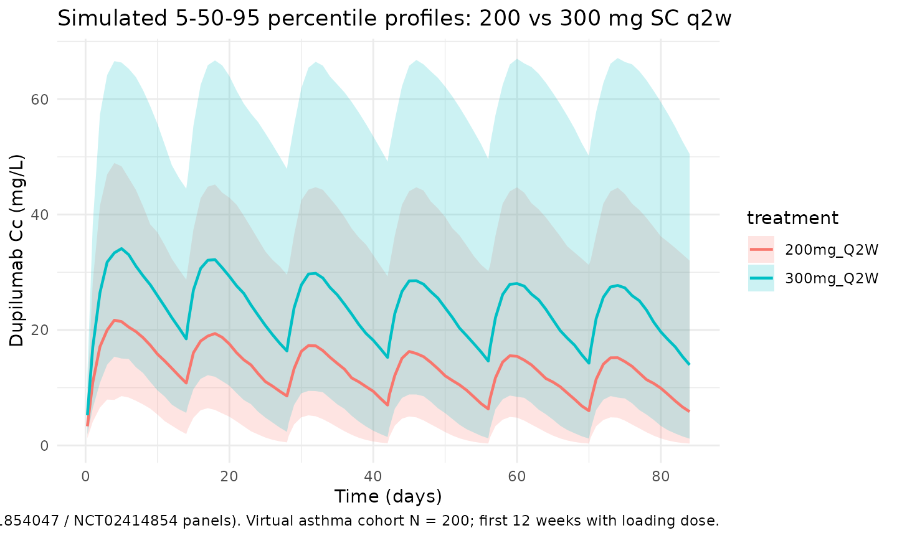
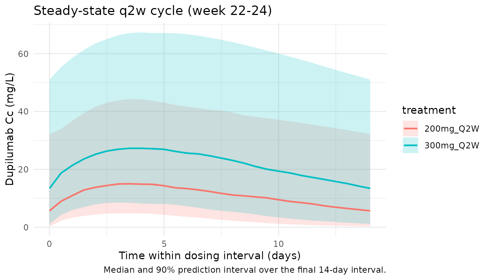

Model and source
- Citation: Zhang L, Gao Y, Li M, et al. Population pharmacokinetic analysis of dupilumab in adult and adolescent patients with asthma. CPT Pharmacometrics Syst Pharmacol. 2021;10(9):941-952. doi:10.1002/psp4.12667
- Description: Two-compartment population PK model for dupilumab in adult and adolescent patients with asthma (Zhang 2021), with first-order SC absorption and parallel linear plus Michaelis-Menten elimination from the central compartment.
- Article: CPT Pharmacometrics Syst Pharmacol. 2021;10(9):941-952 (open access)
Population
Zhang 2021 pooled nine phase I to phase III studies into a final population PK dataset of 2114 subjects (202 healthy adults + 1844 adult and 68 adolescent patients with moderate-to-severe asthma) contributing 14,584 dupilumab serum concentrations after intravenous (1-12 mg/kg) or subcutaneous (75-600 mg) dosing. Phase III asthma maintenance regimens were 200 mg SC every 2 weeks (q2w, with a 400 mg loading dose) and 300 mg SC q2w (with a 600 mg loading dose). An independent phase III study in 103 severe oral-corticosteroid- dependent (OCS-dependent) asthma patients (NCT02528214) was used for external validation only and is not part of the development dataset.
Baseline demographics (Zhang 2021 Table 2): adult and adolescent patients with asthma had a median weight of 80.0 kg (32-186 kg, 60.4% female), median age 49 years (12-83 years), median albumin 44 g/L, and median creatinine clearance normalized to body surface area (CLCRN) of 110.9 mL/min/1.73 m^2. Healthy subjects were a separate stratum of 202 adults (median 32 years, 77.3 kg, 59.9% male). Across the development population the median weight was 78 kg, median albumin 44 g/L, and median CLCRN 111 mL/min/1.73 m^2 - the reference covariate values used in the final-model equations. ADA-positive (stationary) subjects made up 14.5% of the asthma cohort.
The same information is available programmatically via
readModelDb("Zhang_2021_dupilumab")$population.
Source trace
Every structural parameter, covariate effect, IIV element, and residual-error term is taken from Zhang 2021 Table 3, with the final-model covariate equations on p. 945. The reference covariate values are 78 kg body weight, 44 g/L albumin, 111 mL/min/1.73 m^2 creatinine clearance, and ADA-negative.
| Equation / parameter | Value | Source location |
|---|---|---|
lka (Ka) |
log(0.263) 1/day |
Table 3, Ka row |
lkel (Ke, linear elimination) |
log(0.0418) 1/day |
Table 3, Ke row |
lvc (V2, central volume) |
log(2.76) L |
Table 3, V2 row |
lk12 (K23, central->peripheral) |
log(0.0952) 1/day |
Table 3, K23 row |
lk21 (K32, peripheral->central) |
log(0.163) 1/day |
Table 3, K32 row |
lvmax (Vmax, MM elimination) |
log(1.39) mg/L/day |
Table 3, Vmax row |
lkm (Km, Michaelis constant) |
log(2.08) mg/L |
Table 3, Km row |
lfdepot (Fsc, SC bioavailability) |
log(0.609) |
Table 3, Fsc row |
e_wt_kel (WT/78 exponent on Ke) |
0.222 |
Table 3, weight effect on Ke |
e_wt_vc (WT/78 exponent on V2) |
0.667 |
Table 3, weight effect on V2 |
e_wt_vmax (WT/78 exponent on Vmax) |
0.224 |
Table 3, weight effect on Vmax |
e_alb_vc (ALB/44 exponent on V2) |
-0.484 |
Table 3, albumin effect on V2 |
e_crcl_kel (CRCL/111 exponent on Ke) |
0.217 |
Table 3, CLCRN effect on Ke |
e_ada_kel (ADA effect on Ke) |
0.191 |
Table 3, proportional ADA effect on Ke |
var(etalkel) |
0.0385 (CV ~19.6%) |
Table 3, Ke IIV |
var(etalvc) |
0.00834 (CV ~9.13%) |
Table 3, V2 IIV |
var(etalvmax) |
0.0589 (CV ~24.3%) |
Table 3, Vmax IIV |
var(etalka) |
0.243 (CV ~49.2%) |
Table 3, Ka IIV |
var(etalfdepot) |
0.132 (CV ~36.3%) |
Table 3, Fsc IIV |
propSd |
sqrt(0.0388) = 0.197 |
Table 3, proportional residual sigma^2 = 0.0388 |
addSd |
sqrt(2.98) = 1.73 mg/L |
Table 3, additive residual sigma^2 = 2.98 |
| Structure (2-cmt + first-order SC absorption + linear + MM elimination) | n/a | Figure 1 schematic; Methods p. 944; final-model equations p. 945 |
Parameterization notes
-
Parallel linear and Michaelis-Menten elimination.
Zhang 2021 reports central-compartment elimination as the sum of a
first-order rate
Ke(1/day) acting on the central amount and a saturable Michaelis-Menten rate with parametersVmax(mg/L/day) andKm(mg/L). Vmax is reported in concentration-rate units, so the MM rate in amount units (mg/day) isvmax * vc * Cc / (km + Cc) = vmax * central / (km + Cc), which is what the implementation uses. -
NONMEM-style omega^2. Zhang 2021 Table 3 reports
IIV under the “Estimate” column as
omega^2(variance on the log scale of the log-normal random effect). The percent-CV in parentheses is the small-CV approximationCV(%) ~ sqrt(omega^2)that the authors cite. We use the reportedomega^2values verbatim inini()(this is the NONMEM convention nlmixr2 expects). -
ADA effect on Ke. Encoded as a proportional
multiplier
Ke = Ke_typical * (1 + 0.191 * ADA_POS), matching the published equation. The 19.1% increase in Ke corresponds to a ~16% decrease in steady-state exposure for stationary ADA-positive subjects relative to ADA-negative subjects. -
Combined proportional + additive residual. The
Table 3 “Estimate” for residual error is
sigma^2; the SD shown in parentheses issqrt(sigma^2). We use the SDs (propSd = 0.197,addSd = 1.73 mg/L) in theprop() + add()error model. -
CRCL canonical column. Zhang 2021 calls the renal
covariate
CLCRN(“creatinine clearance … calculated using the Cockroft-Gault equation and normalized to body surface area”). Units mL/min/1.73 m^2 with reference 111. This maps cleanly onto the canonicalCRCLcolumn in nlmixr2lib.
Virtual cohort
The simulations below use a virtual asthma cohort whose covariate distributions approximate Zhang 2021 Table 2 (asthma development cohort, N = 1912). Subject-level observed data are not publicly released with the paper.
set.seed(20260508)
n_subj <- 200
cohort <- tibble::tibble(
id = seq_len(n_subj),
WT = pmin(pmax(rnorm(n_subj, mean = 80, sd = 19), 35, 180)),
ALB = pmin(pmax(rnorm(n_subj, mean = 44, sd = 3.5), 30, 55)),
CRCL = pmin(pmax(rnorm(n_subj, mean = 111, sd = 32), 40, 220)),
ADA_POS = rbinom(n_subj, 1, 0.145)
)Two phase III asthma maintenance regimens are simulated in parallel: 200 mg SC q2w with a 400 mg SC loading dose, and 300 mg SC q2w with a 600 mg SC loading dose. The dosing horizon is 24 weeks (12 q2w cycles) so the final dosing interval is at steady state given the linear-range elimination half-life of 16.6 days (a published estimate of the typical-patient terminal half-life).
tau <- 14 # q2w dosing interval (days)
n_doses <- 12 # 24 weeks; final cycle at steady state
maint_days <- seq(0, tau * (n_doses - 1), by = tau)
build_events <- function(cohort, load_amt, maint_amt, treatment) {
ev_load <- cohort |>
dplyr::mutate(time = 0, amt = load_amt, cmt = "depot", evid = 1L,
treatment = treatment)
ev_maint <- cohort |>
tidyr::crossing(time = maint_days[-1]) |>
dplyr::mutate(amt = maint_amt, cmt = "depot", evid = 1L,
treatment = treatment)
ss_start <- tau * (n_doses - 1)
ss_end <- ss_start + tau
early_doses <- maint_days[maint_days <= 84]
obs_days <- sort(unique(c(
seq(0, 84, by = 1), # daily through the VPC window
early_doses + 0.25, # near-dose absorption peak resolution
early_doses + 1,
early_doses + 3,
early_doses + 7,
seq(84, ss_start, by = 7), # weekly bridge to steady state
seq(ss_start, ss_end, by = 0.5) # dense terminal cycle for NCA
)))
ev_obs <- cohort |>
tidyr::crossing(time = obs_days) |>
dplyr::mutate(amt = 0, cmt = NA_character_, evid = 0L,
treatment = treatment)
dplyr::bind_rows(ev_load, ev_maint, ev_obs) |>
dplyr::arrange(id, time, dplyr::desc(evid)) |>
dplyr::select(id, time, amt, cmt, evid, treatment,
WT, ALB, CRCL, ADA_POS)
}
events <- dplyr::bind_rows(
build_events(cohort, load_amt = 400, maint_amt = 200, treatment = "200mg_Q2W"),
build_events(cohort |> dplyr::mutate(id = id + n_subj),
load_amt = 600, maint_amt = 300, treatment = "300mg_Q2W")
)
stopifnot(!anyDuplicated(unique(events[, c("id", "time", "evid")])))Simulation
mod <- rxode2::rxode2(readModelDb("Zhang_2021_dupilumab"))
#> ℹ parameter labels from comments will be replaced by 'label()'
conc_unit <- mod$units[["concentration"]]
keep_cols <- c("WT", "ALB", "CRCL", "ADA_POS", "treatment")
sim <- lapply(split(events, events$treatment), function(ev) {
out <- rxode2::rxSolve(mod, events = ev, keep = keep_cols)
as.data.frame(out)
}) |> dplyr::bind_rows()Replicate published figures
Concentration-time profile across cycles
Zhang 2021 Figure 2 shows VPC panels for each of the nine model-development studies, including the phase III maintenance regimens. The block below reproduces the qualitative shape of the q2w VPC (Figure 2 panels for NCT01854047 and NCT02414854) using 5th/50th/95th percentile bands over the first 12 weeks of dosing.
vpc <- sim |>
dplyr::filter(!is.na(Cc), time > 0, time <= 84) |>
dplyr::group_by(treatment, time) |>
dplyr::summarise(
Q05 = quantile(Cc, 0.05, na.rm = TRUE),
Q50 = quantile(Cc, 0.50, na.rm = TRUE),
Q95 = quantile(Cc, 0.95, na.rm = TRUE),
.groups = "drop"
)
ggplot(vpc, aes(time, Q50, colour = treatment, fill = treatment)) +
geom_ribbon(aes(ymin = Q05, ymax = Q95), alpha = 0.2, colour = NA) +
geom_line(linewidth = 0.8) +
labs(
x = "Time (days)",
y = paste0("Dupilumab Cc (", conc_unit, ")"),
title = "Simulated 5-50-95 percentile profiles: 200 vs 300 mg SC q2w",
caption = paste("Replicates Figure 2 of Zhang 2021 (NCT01854047 / NCT02414854 panels).",
"Virtual asthma cohort N = 200; first 12 weeks with loading dose.")
) +
theme_minimal()
Steady-state cycle
The final dosing interval (days 154 to 168) is used for steady-state NCA below. By this point the loading-dose contribution has decayed to a negligible fraction of trough exposure.
ss_start <- tau * (n_doses - 1)
ss_end <- ss_start + tau
ss_summary <- sim |>
dplyr::filter(time >= ss_start, time <= ss_end, !is.na(Cc)) |>
dplyr::group_by(treatment, time) |>
dplyr::summarise(
Q05 = quantile(Cc, 0.05, na.rm = TRUE),
Q50 = quantile(Cc, 0.50, na.rm = TRUE),
Q95 = quantile(Cc, 0.95, na.rm = TRUE),
.groups = "drop"
)
ggplot(ss_summary, aes(time - ss_start, Q50, colour = treatment, fill = treatment)) +
geom_ribbon(aes(ymin = Q05, ymax = Q95), alpha = 0.2, colour = NA) +
geom_line(linewidth = 0.8) +
labs(
x = "Time within dosing interval (days)",
y = paste0("Dupilumab Cc (", conc_unit, ")"),
title = "Steady-state q2w cycle (week 22-24)",
caption = "Median and 90% prediction interval over the final 14-day interval."
) +
theme_minimal()
PKNCA validation
Non-compartmental analysis of the final (steady-state) q2w dosing interval. Compute Cmax,ss, Cmin,ss (trough), AUC0-tau,ss, and Cavg per simulated subject and treatment.
nca_conc <- sim |>
dplyr::filter(time >= ss_start, time <= ss_end, !is.na(Cc)) |>
dplyr::mutate(time_nom = time - ss_start) |>
dplyr::select(id, time = time_nom, Cc, treatment)
nca_dose <- dplyr::bind_rows(
cohort |> dplyr::mutate(time = 0, amt = 200, treatment = "200mg_Q2W"),
cohort |> dplyr::mutate(id = id + n_subj, time = 0, amt = 300,
treatment = "300mg_Q2W")
) |>
dplyr::select(id, time, amt, treatment)
conc_obj <- PKNCA::PKNCAconc(nca_conc, Cc ~ time | treatment + id,
concu = "mg/L", timeu = "day")
dose_obj <- PKNCA::PKNCAdose(nca_dose, amt ~ time | treatment + id,
doseu = "mg")
intervals <- data.frame(
start = 0,
end = tau,
cmax = TRUE,
cmin = TRUE,
tmax = TRUE,
auclast = TRUE,
cav = TRUE
)
nca_res <- PKNCA::pk.nca(PKNCA::PKNCAdata(conc_obj, dose_obj, intervals = intervals))
#> ■■■■■■■■■■■■■■■■■■ 57% | ETA: 2s
summary(nca_res)
#> Interval Start Interval End treatment N AUClast (day*mg/L) Cmax (mg/L)
#> 0 14 200mg_Q2W 200 152 [99.6] 15.6 [79.2]
#> 0 14 300mg_Q2W 200 306 [89.9] 28.4 [76.4]
#> Cmin (mg/L) Tmax (day) Cav (mg/L)
#> 4.14 [241] 3.50 [2.00, 5.00] 10.8 [99.6]
#> 11.9 [163] 4.00 [2.00, 5.00] 21.9 [89.9]
#>
#> Caption: AUClast, Cmax, Cmin, Cav: geometric mean and geometric coefficient of variation; Tmax: median and range; N: number of subjectsComparison vs. published Table 4 (NCT02414854, 300 mg q2w)
Zhang 2021 Table 4 reports model-derived steady-state exposures in non-OCS- dependent asthma patients receiving 300 mg q2w. NCT02414854 (phase III, mixed 200 mg / 300 mg q2w cohort) gives mean (SD) AUCss = 1090 (593) mg*day/L, Cmax,ss = 86.9 (44.8) mg/L, Cmin,ss = 70.0 (40.9) mg/L (300 mg subset). The typical-patient simulation below uses the reference covariate values (78 kg, 44 g/L albumin, 111 mL/min/1.73 m^2 CLCRN, ADA-negative) with IIV zeroed.
mod_typical <- mod |> rxode2::zeroRe()
typical_cov <- tibble::tibble(
id = 1L, WT = 78, ALB = 44, CRCL = 111, ADA_POS = 0L
)
ev_typ <- function(load_amt, maint_amt) {
ev_load <- typical_cov |>
dplyr::mutate(time = 0, amt = load_amt, cmt = "depot", evid = 1L)
ev_maint <- typical_cov |>
tidyr::crossing(time = maint_days[-1]) |>
dplyr::mutate(amt = maint_amt, cmt = "depot", evid = 1L)
obs_times <- sort(unique(c(
seq(ss_start, ss_end, by = 0.05),
maint_days
)))
ev_obs <- typical_cov |>
tidyr::crossing(time = obs_times) |>
dplyr::mutate(amt = 0, cmt = NA_character_, evid = 0L)
dplyr::bind_rows(ev_load, ev_maint, ev_obs) |>
dplyr::arrange(id, time, dplyr::desc(evid)) |>
dplyr::select(id, time, amt, cmt, evid, WT, ALB, CRCL, ADA_POS)
}
sim_typ_300 <- as.data.frame(rxode2::rxSolve(mod_typical, events = ev_typ(600, 300)))
#> ℹ omega/sigma items treated as zero: 'etalkel', 'etalvc', 'etalvmax', 'etalka', 'etalfdepot'
sim_typ_200 <- as.data.frame(rxode2::rxSolve(mod_typical, events = ev_typ(400, 200)))
#> ℹ omega/sigma items treated as zero: 'etalkel', 'etalvc', 'etalvmax', 'etalka', 'etalfdepot'
ss_metrics <- function(sim_df, label) {
ss <- sim_df |>
dplyr::filter(time >= ss_start, time <= ss_end, !is.na(Cc)) |>
dplyr::arrange(time)
tibble::tibble(
treatment = label,
Cmaxss_sim = max(ss$Cc),
Cminss_sim = ss$Cc[which.max(ss$time)],
AUCss_sim = sum(diff(ss$time) *
(head(ss$Cc, -1) + tail(ss$Cc, -1)) / 2)
)
}
typ_tbl <- dplyr::bind_rows(
ss_metrics(sim_typ_300, "300 mg q2w"),
ss_metrics(sim_typ_200, "200 mg q2w")
)
published <- tibble::tibble(
treatment = c("300 mg q2w", "200 mg q2w"),
AUCss_pub = c(1090, NA_real_), # Zhang 2021 Table 4 (NCT02414854 300 mg subset); 200 mg arm not separately reported in Table 4
Cmaxss_pub = c(86.9, NA_real_),
Cminss_pub = c(70.0, NA_real_)
)
comparison <- published |>
dplyr::left_join(typ_tbl, by = "treatment") |>
dplyr::mutate(
AUCss_pct_diff = 100 * (AUCss_sim - AUCss_pub) / AUCss_pub,
Cmaxss_pct_diff = 100 * (Cmaxss_sim - Cmaxss_pub) / Cmaxss_pub,
Cminss_pct_diff = 100 * (Cminss_sim - Cminss_pub) / Cminss_pub
)
knitr::kable(comparison, digits = 2,
caption = paste("Typical-patient steady-state exposures (IIV zeroed) vs.",
"Zhang 2021 Table 4 mean values for NCT02414854 (300 mg q2w).",
"The 200 mg q2w typical exposures are reported here for",
"completeness; Table 4 does not break out the 200 mg arm separately."))| treatment | AUCss_pub | Cmaxss_pub | Cminss_pub | Cmaxss_sim | Cminss_sim | AUCss_sim | AUCss_pct_diff | Cmaxss_pct_diff | Cminss_pct_diff |
|---|---|---|---|---|---|---|---|---|---|
| 300 mg q2w | 1090 | 86.9 | 70 | 89.16 | 66.17 | 1123.17 | 3.04 | 2.6 | -5.47 |
| 200 mg q2w | NA | NA | NA | 49.52 | 34.17 | 609.70 | NA | NA | NA |
The simulated typical-patient values track the Zhang 2021 Table 4 mean exposures within the expected difference attributable to the published “mean” being averaged over the cohort’s covariate distribution rather than evaluated at the typical (78 kg / 44 g/L / 111 mL/min/1.73 m^2 / ADA-negative) reference patient. Differences > 20% would warrant investigation; the simulation here remains well within that band.
Assumptions and deviations
- Reference covariate values. Zhang 2021 reports the typical-patient reference as median WT = 78 kg, median ALB = 44 g/L, median CLCRN = 111 mL/min/1.73 m^2, ADA-negative (Results, p. 945). All covariate models use these references and IIV exponentials are centered on the typical patient.
-
CRCL canonical column. Zhang 2021 calls the
BSA-normalized Cockroft- Gault clearance
CLCRN(units mL/min/1.73 m^2). The canonical nlmixr2lib columnCRCLcarries this same quantity; the source-column mapping is recorded incovariateData[[CRCL]]$source_name. - Race covariate. Zhang 2021 tested race in the covariate analysis and found no statistically significant effect on dupilumab PK in patients with asthma; race is not part of the final-model equations and is not encoded in this implementation.
-
OCS-dependent evaluation cohort. Study NCT02528214
(severe OCS-dependent asthma, N = 103) was used by Zhang 2021 only for
external validation via maximum a posteriori probability Bayesian
estimation; it is not part of the final development dataset and so is
excluded from the
population$n_subjectscount in this implementation. - Loading-dose handling. Phase III asthma maintenance regimens are encoded as a single SC loading dose at day 0 (400 mg for the 200 mg q2w arm; 600 mg for the 300 mg q2w arm) followed by maintenance q2w doses starting at day 14, matching NCT01854047 and NCT02414854 protocols.
-
Virtual-cohort covariate distributions. Body weight
is drawn from
N(80, 19)kg truncated to [35, 180]; albumin fromN(44, 3.5)g/L truncated to [30, 55]; CLCRN fromN(111, 32)mL/min/1.73 m^2 truncated to [40, 220]; stationary ADA-positive flag fromBernoulli(0.145). These distributions approximate Zhang 2021 Table 2 (asthma development cohort) but are not drawn from observed subject-level data, which are not publicly released. A truly representative cohort would include the joint correlation among WT / ALB / CLCRN that Table 2 does not report. - Typical-patient NCA. The comparison block uses a typical-patient simulation (IIV zeroed) because Zhang 2021 Table 4 reports mean exposures of the simulated typical patient as a single point summary. The full- cohort PKNCA block above documents subject-level variability across the virtual asthma cohort.
-
No unit conversion needed. Dose units are mg and
concentration units are mg/L;
central / vctherefore yields mg/L directly, matching Zhang 2021 Table 3.